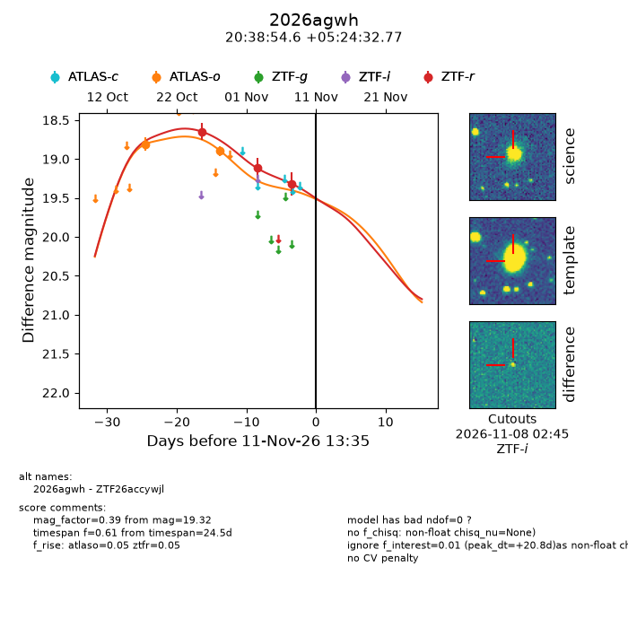
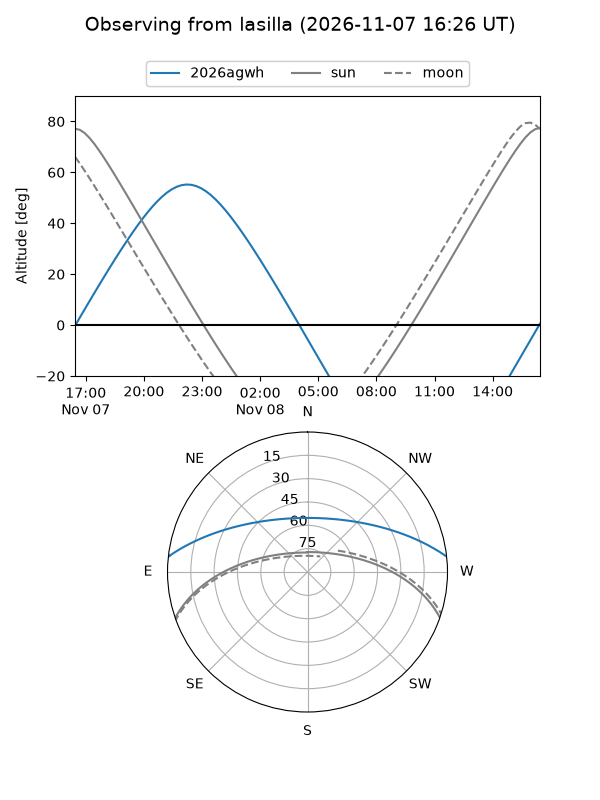
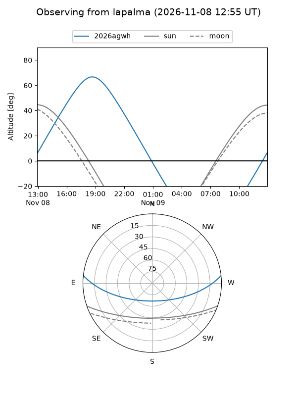
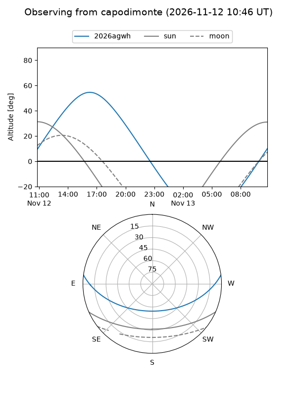
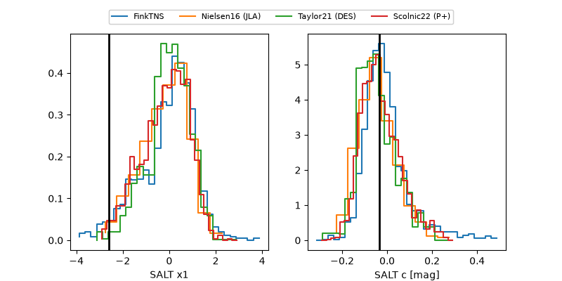

2026agwh
Target 2026agwh at 2026-11-11 13:37
Aliases and brokers:
FINK-ZTF: ztf.fink-portal.org/ZTF26accywjl
Lasair-ZTF: lasair-ztf.lsst.ac.uk/objects/ZTF26accywjl
ALeRCE-ZTF: alerce.online/object/ZTF26accywjl
YSE-PZ: ziggy.ucolick.org/yse/transient_detail/2026agwh
TNS name: wis-tns.org/object/2026agwh
Direct TNS query: direct search
alt names
ZTF26accywjl (ztf,fink_ztf)
2026agwh (tns,yse)
Coordinates:
equatorial (ra, dec) = 309.7273,+5.40910
equatorial (HMS+DMS) = 20:38:54.55,+05:24:32.77
galactic (l, b) = (50.9610,-20.94311)
Flags:
peak dt: +20.8
Photometry:
last atlaso=18.90, ztfr=19.32
2 atlaso, 3 ztfr detections
Lightcurve

Visibility



Additional plots
